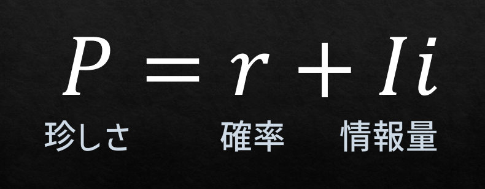
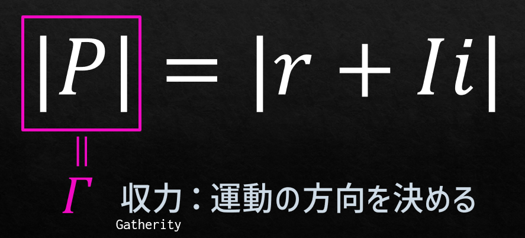
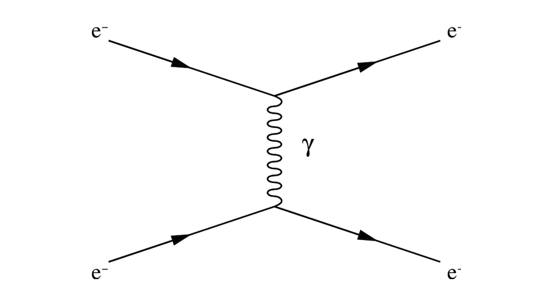

通信の力学的理論 序説
シャノンは通信路における情報量について偉大な功績を残した．それでは情報とはなんのためにあるのか．これにはいろいろな答え方があるが，わかりやすく考えると，情報が多いところに集まる，という見方だ．人も物やお金も情報も，ありふれたところではなく，情報量の大きいところに集まるだろう．では，「集まる」をどう定義したらよいか．ここで私は「珍しさ」という量を次のように定義した．
まず，確率を変数のひとつに加えた．これは起こりそうな現象に関する情報であれば珍しさへの期待は高まることを加味するためである．また，絶対に起こる現象については一定の期待を持ち，全く起こらない現象に関する情報については関心を惹かないことを考慮に入れるためである．
しかし，人は確率だけで情報の価値を決めていない．確率と連動する情報量の多さで価値を決めている．したがって，確率に情報量を虚数として加えた．なお，風評や噂など，情報量が確率と必ずしも連動しない場合も考えうる．こうして珍しさを確率と情報量の和による複素数として定義した．なぜ情報量を虚数にしたかといえば，珍しさを複素平面に描いた時，ζ関数を利用できるからである．例えば，確率が1/2である場合に，ζ関数のゼロ点がその確率の値に対応する．また，同じ確率を持つ2対象が，情報量の多寡によって異なる珍しさを示すことを複素平面上にプロットできる．
そして，この複素平面上にプロットした珍しさは，その絶対値を取ると珍しさの強度ないし「力」と見ることができる．この力は集まりやすさをもたらす力であり，「収力 gatherity」と命名する．収力が大きい情報ほど，物事を集めるのである．収力は珍しさの絶対値と比例する．また，収力は情報量の大きさに何より左右される．実際の起こりやすさ以上に情報が価値をつり上げてしまうためだ．確率も確かに収力の大きさを左右するが，ζ関数をプロットした複素平面上のどの流れに向かうかも決める．すなわち，確率が1/2から外れた場合，その確率はその後に変化する流れの向きを決める．これが確率と情報量を複素和で表した最大の利点である．確率が1/2である点は，ζ関数がゼロになるので，その流れに乗ることなくとどまる．つまり，起こるかどうか未知の事象は，未知のままであり続ける．
物事は情報量の多い方へ流れ，情報を交換すると珍しさが減るので，再び情報量が多い物事の方へ流れる．万物が一定に止まっていないのは，このような情報交換の仕組みのためである．冒頭の問いに戻ろう．情報とはなんのためにあるのか．集めるという運動を促すためである．万物は情報を求めて動き回り続ける存在であるとも言える．全てを知ると物事は起こるべくして起こる．しかし，そんな存在は神さまだけである．私たち人間は全てを知ることがないゆえに，いつまでも動き続けるよう定められているのだと思う．